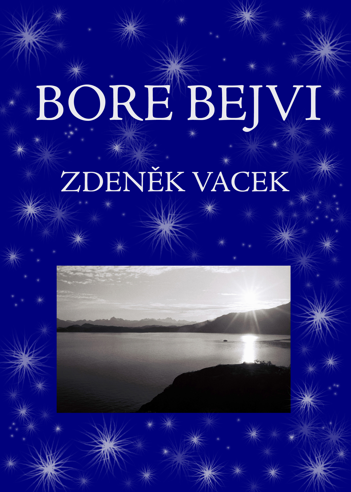
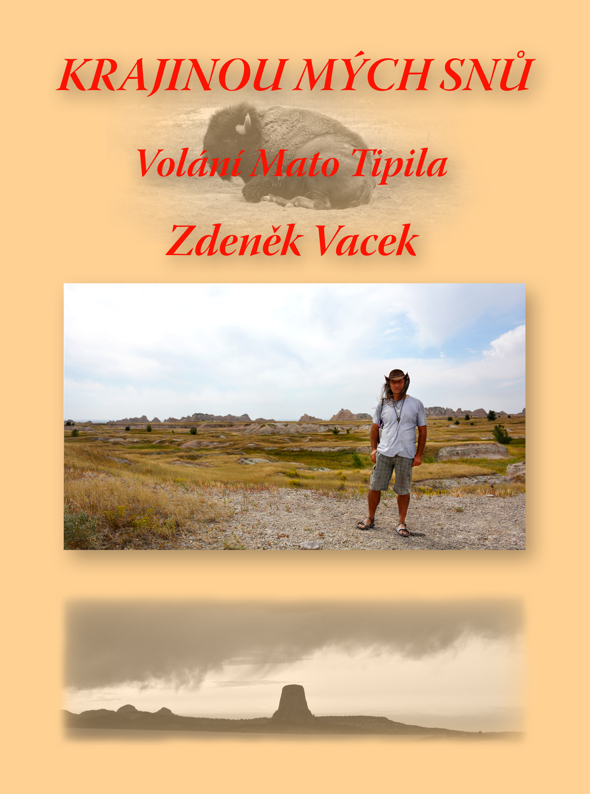
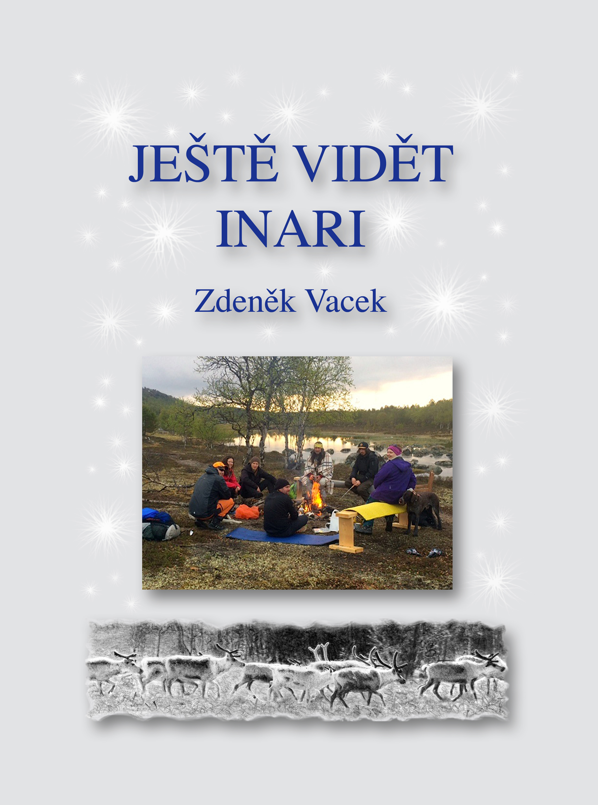

×
Nabídka
Knihy
Přednášky
Filmy
Tábory
O webu
HRA
WEB SLAVÍ ZALOŽENÍ - SLEVY AŽ 40%
×
Hledat
☰ MENU

Bore Bejvi
Náš život je tak bohatý, jak ho dokážeme naplnit. To, co prožijeme, je jediné bohatství, které máme.
Tu chci!

Krajinou mých snů
Život je plný každodenních zázraků, které nás obklopují. Bez nich by neexistoval Život na planetě Zemi a ani Vědomí, které nám dává dar Vidění.
Tu chci!

Ještě vidět Inari
Lidi ani situace v životě nepotkáváme náhodou. Náhoda je jen to, že si to někdo může myslet.
Tu chci!